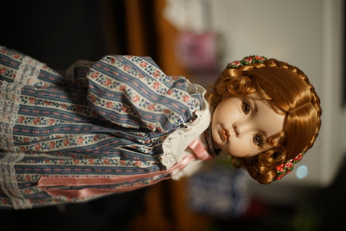

The thrift hauls are adding up again...
I can never resist these books when they're this price.
Wahoo!!!!
I love A Fever You Can't Sweat Out, but I hate whatever he made with T Swizzy with a passion, so I feel like I'm walking a thin line as time progresses with Brendon Urie.
Ryan didn't want to buy it because he was buying the d*ng shirt.
Für meine Liebe, hors. A little girl bear carrying her 2 littler bear dolls. The sweetest figure out of Grandma's collection.
These prices are outrageous.
I just listened to this album on youtube and decided I was going to keep my eye out for it about a week ago.
I will officially complete Ryan's Seinfeld collection this Christmas. Do not let me buy any more Seinfeld sets.
Ryan has already started singing Thanksgiving music. I thought this was a live album from the back of the case, but it turns out they listed the recording studio on the back.
Just because YOU don't like minions doesn't mean I don't like minions!!!!!
I found this before, but super scratched.
The New Wave Twins of Goodwill recommended this band to me years ago. I hope we will cross paths again.
I bought a compilation of Bryan Ferry/Roxy Music a few months ago and I hated everything up until around this album.Someone else will have to tell me if they have something good that I missed.
The "do I want to buy a live album or leave a Depeche Mode album?" question strikes again. I think we can say at this point, I will buy just about any Depeche Mode I see.
You should play this game. It's very good.
we paid nothing for this from the Free Pile at Gamer's Tavern
And I will end the night with an unexpectly blessed haul. The books are all from Tacoma Book Center, which is a very large used book store. If you are looking for books on art, go somewhere else, because this store blocks off that area packaging their Abe Books orders and it's a royal pa*n to get in and out of it.
Just photographs of his statues. Exactly what I wanted.
You can basically always find a cheap porcelain doll at a thrift store. There's plenty of them on this Earth and no one wants them. If you keep checking faces, you will eventually find a few that had love and care put into their production. Every few months, I find a doll that tries to steal my heart, but I stay strong and resist! The last one was an absolutely gigantic girl, but her $40 price tag kept me sane.
Back when I was 14 (only 3 years ago), I got into BJDs and was so excited about BJDs that I looked through all of my mom's old DOLLS magazines. I didn't find anything I was interested in, except one. An advertisement for Dianna Effner's Emily caught my attention. There are a few Western doll sculptors that I do considered to be very skilled and tasteful. Dianna Effner was one of them. This particular sculpt of hers is my favorite and has been basically the only American sculpted doll I've looked out for.
The Emily I found is the 19" version. She has inset acrylic eyes and a Monique Sheila 280 wig in size 12-13. I believe the color is 27 - light ginger. I would honestly go at least one size down for her wig. According to this site, she should be wearing a 10-11. Her arms and legs are marked "Julie Good Kruger 1989". I'm unable to read the inscription on her chest piece.
I found a string around her left wrist which makes me think she had a tag before making it into Goodwill. Customizer "La Pime" or "La Dime" carved her name in and dated her 1999. Everything about her is just slightly off from the promo images. Her wig and eyes are a little too light. Her dress is blue rather than green. Miss La Dime owned a serger! This dress is nicely made and so is the fabric body.
She wasn't painted to my standards and I think the quality of her sculpt isn't reaching its full potential. She has some awful eyelashes installed. I don't know if I can repaint her, but those eyelashes are going. Her acrylic eyes will be heading out as well. My dolls deserve glass eyes.
Her shoes are 69mm long and her big toe makes a little lump in them. I'll try to find her some in the 70-75mm range and hope they fit better. I'll also try to find her a different wig. Luckily she's the right proportions to find these things in thrift stores and consignment shops instead of having to order from Asia. I've always been so sad to find Monique Gold wigs bigger than my dolls and now I have an excuse to buy them.
I discovered a twitter doller recently named Nonn who owns Annette Himstedt dolls customized in Jfashion. I never once considered such a customization as Western dolls styled in a Japanese way. Perhaps this is something to consider.
She's really a beautiful sculpt. I'm very happy I found her after many years of looking.